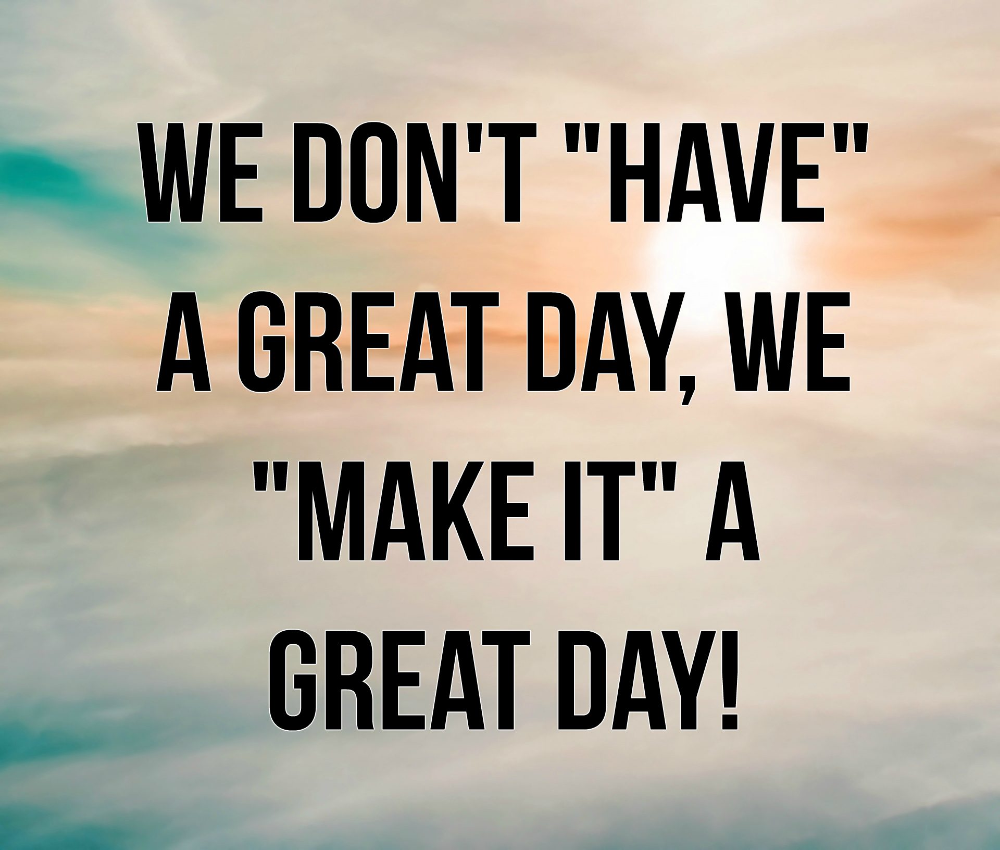

Breakfast, 7.30 AM
At 7.30 AM I would wake up and get ready for class.
Early in the morning, I would prefer having light breakfast such as toast or cereal.
MCO happen since 18th of March and I had to come back to my hometown, Miri on 17th of March.
Eventhough it MCO but my class still going on which is online class session which start on 13 of April 2020.
.
At 7.30 AM I would wake up and get ready for class.
Early in the morning, I would prefer having light breakfast such as toast or cereal.
On Monday, the first class would be English for Critical Academic Reading, ELC501.
Our lecterur, Dr.Philip will send a file of a chapter and a task to do through our Whatsapp group.The task should be done before 12 noon on the same day.
After the morning class, I will get some rest or I will straight away do my assignments.
Other than that, I prepare for the next class by reading some notes that has been given by my lecterur.
At noon, I will go for prayer, Zohor.
In the evening I would have 2 classes which are Economics, ECO415 and Personal Development and Ethics, MGT538.
For Economics class, we will discuss the tutorial question of the previous week.
For Personal Development and Ethics class, our lecterur, Madam Ratna will use Google Meet to teach us. Besides, she will be using Google Classroom to post the task.
After the class finish, I will take a rest.
I will help my mom to prepare for the dinner. After that, we will go for prayer together.
During this time, I will continue with my assignments.
Sometimes, I will be having discussion with my friend regarding the assignment or task given by the lecterur. By this way, we can exchange ideas and teach each other.
After I done with my assignments, I will release my stress by playing games or watch movies.
Mobile game that I usually play is Player Unknown Battlegroung Mobile, PUBG Mobile.Sometimes, I will spend few hour before sleep watching movies on the Netflix.
At 2 AM I will go for 5 hours sleep.
5 hours sleep is enough for me to prepare for the next day.